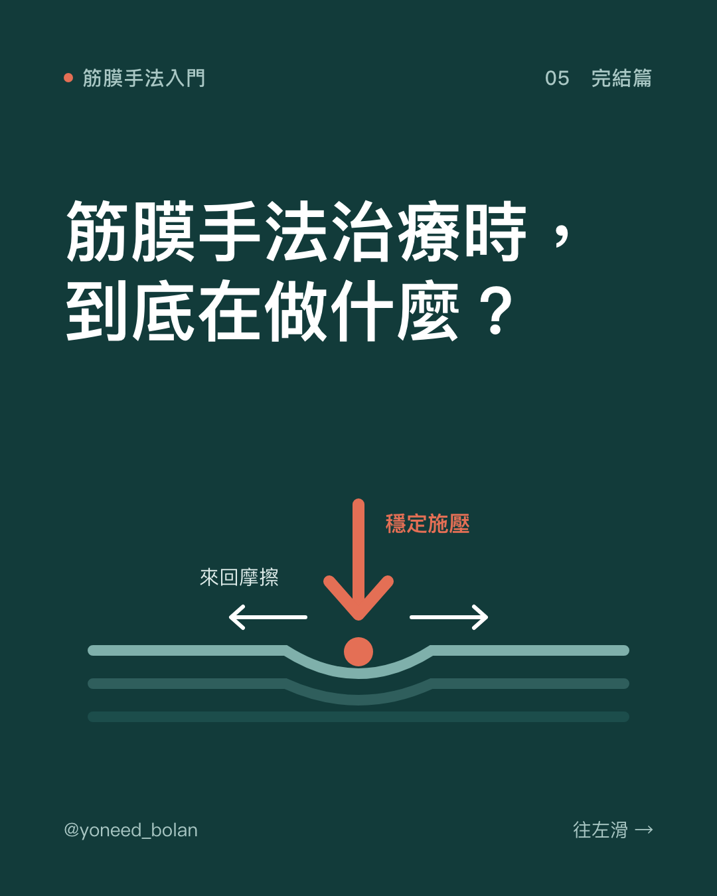
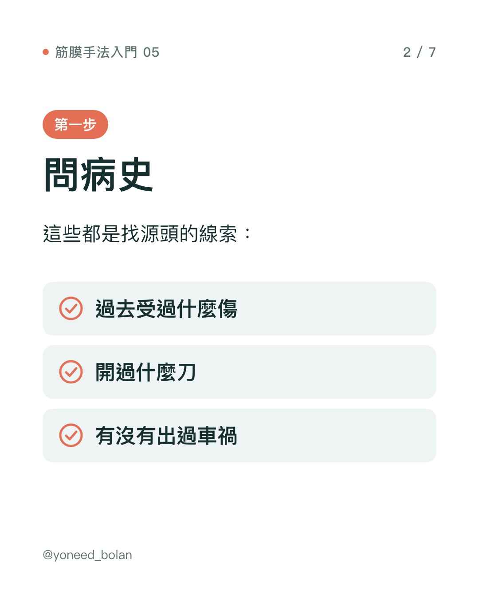
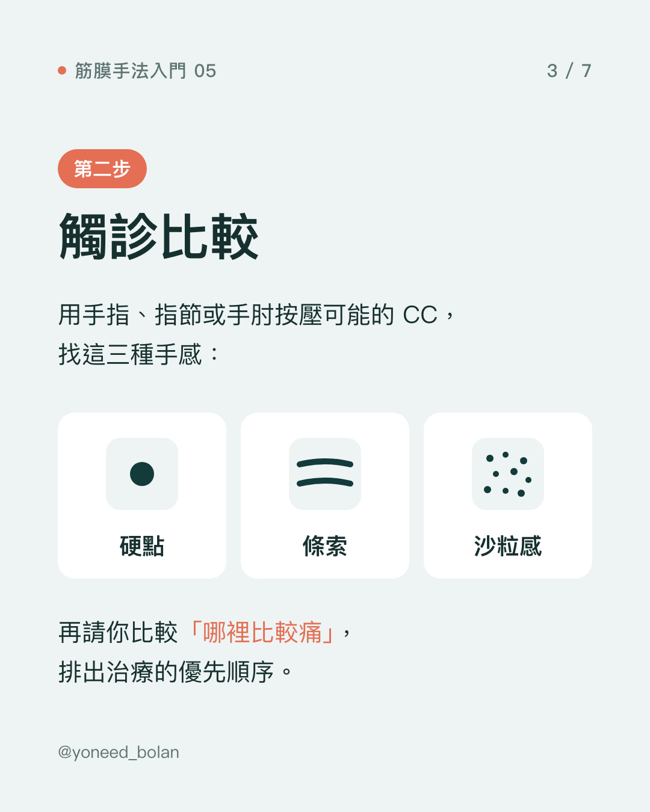
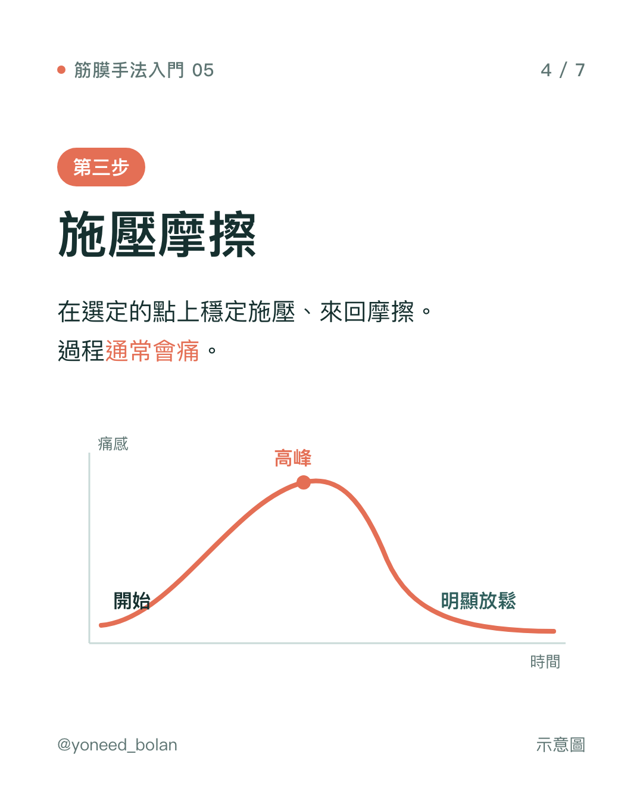
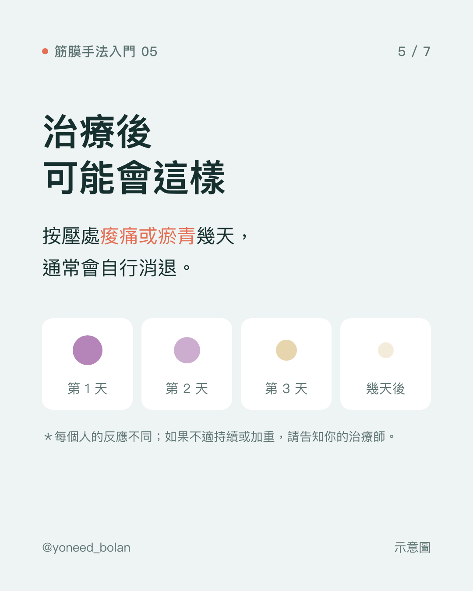
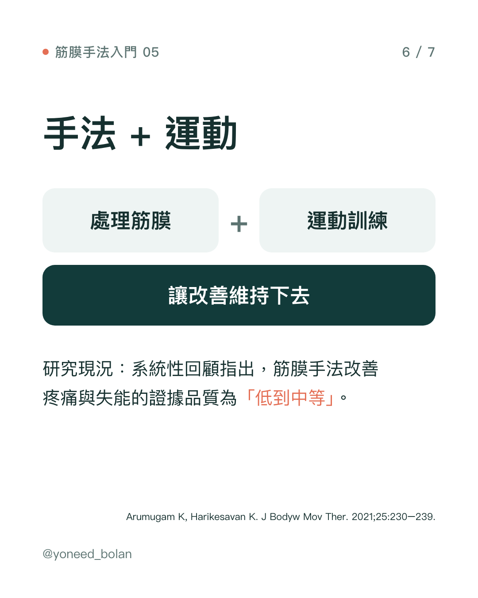

衛教文章・筋膜手法入門 05
筋膜手法治療時，到底在做什麼？從評估到治療後
- 筋膜手法分成評估和治療兩部分，評估通常花比較多時間。
- 治療是在選定的點上穩定施壓、來回摩擦，過程通常會痛，痛感常常先升高再明顯放鬆。
- 治療後幾天，按壓處可能痠痛或瘀青，通常會自行消退。
- 系統性回顧認為筋膜手法的證據品質為「低到中等」；我會搭配運動訓練，讓改善維持下去。






系列最後一篇，說明實際治療的過程，讓你第一次來心裡有底。
第一步：問病史
治療師會先了解你現在哪裡痛、什麼動作會痛、痛了多久，接著問過去的病史：受過什麼傷、開過什麼刀、有沒有出過車禍、有沒有骨折。
這些問題不是例行公事。依筋膜手法的代償模型（見第 04 篇），現在的痛可能和多年前的舊傷有關，病史是回推源頭的重要線索。
第二步：動作檢查與觸診比較
接著觀察你在不同方向的動作，找出哪個節段、哪個方向受限或會痛。然後用手指、指節或手肘，按壓可能出問題的協調中心（CC，見第 03 篇），找比較硬、像條索或沙粒的手感。
治療師會請你比較：「這裡和這裡，哪個比較痛？」依照觸診的手感和你的回饋，排出治療的優先順序。每次治療通常只處理幾個點，不會全身都按。
第三步：施壓與摩擦
在選定的點上，治療師會穩定施壓、來回摩擦。過程通常會痛，而且常有一個特徵：痛感先慢慢升到高峰，接著明顯放鬆下來。治療師會依你的反應調整力道，覺得受不了一定要說。
為什麼要來回摩擦？一篇數學模型研究推估，來回擺動的手法會讓筋膜層間玻尿酸的壓力上升，而且比單純滑動更明顯（Roman et al., 2013）。研究者認為，這可能有助於改善層與層之間的滑動。
治療後可能會這樣
- 痠痛：按壓處痠痛一到數天，類似運動後的痠痛。
- 瘀青：部分人會出現瘀青，通常會自行消退。
- 動作變輕鬆：有些人治療後動作馬上變順，有些人要過幾天才有感覺，也有人改變不明顯。每個人的反應不同。
如果治療後出現劇烈疼痛、腫脹持續增加，或是麻木無力，請盡快聯絡治療師或就醫。
第一次來，請先告訴治療師
待確認：以下清單請依你的臨床判斷修改
- 是否懷孕
- 是否有凝血異常，或正在服用抗凝血藥物
- 治療部位附近是否有傷口、皮膚感染或急性發炎
- 近期是否骨折或開過刀
手法之後：運動訓練
一篇系統性回顧整理了 13 篇研究，結論是筋膜手法改善肌肉骨骼疼痛與失能的證據品質為「低到中等」（Arumugam & Harikesavan, 2021）。也就是說，它有初步研究支持，但研究數量和品質都還在累積。
我的做法是：先用手法處理筋膜，讓動作變得比較順，再搭配針對性的運動訓練，讓身體學會新的用力方式，改善才能維持下去。手法是工具之一，不是全部。
重點整理
- 評估包括問病史、動作檢查與觸診比較，用來決定治療的位置與順序。
- 治療是穩定施壓、來回摩擦，通常會痛，痛感常先升高再放鬆。
- 治療後可能痠痛或瘀青幾天；反應因人而異。
- 筋膜手法的證據品質為低到中等，搭配運動訓練是讓改善維持的關鍵。
「筋膜手法入門」系列到這裡結束。想知道哪個部位的筋膜問題，歡迎到 Threads 或 Instagram 留言告訴我。
參考文獻
- Roman M, Chaudhry H, Bukiet B, Stecco A, Findley TW. Mathematical analysis of the flow of hyaluronic acid around fascia during manual therapy motions. J Am Osteopath Assoc. 2013;113(8):600–610. doi:10.7556/jaoa.2013.021.
- Arumugam K, Harikesavan K. Effectiveness of fascial manipulation on pain and disability in musculoskeletal conditions. A systematic review. J Bodyw Mov Ther. 2021;25:230–239. PMID: 33714501.
- Stecco L. Fascial Manipulation for Musculoskeletal Pain. Padova: Piccin; 2004.（筋膜手法教科書）